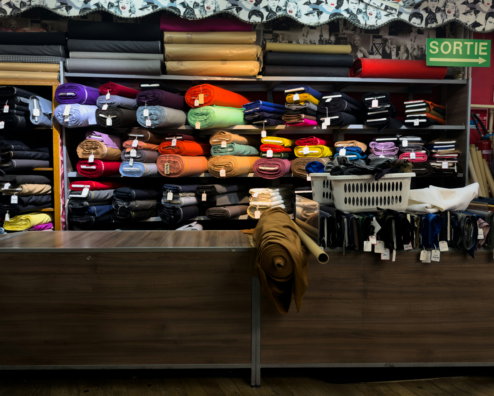
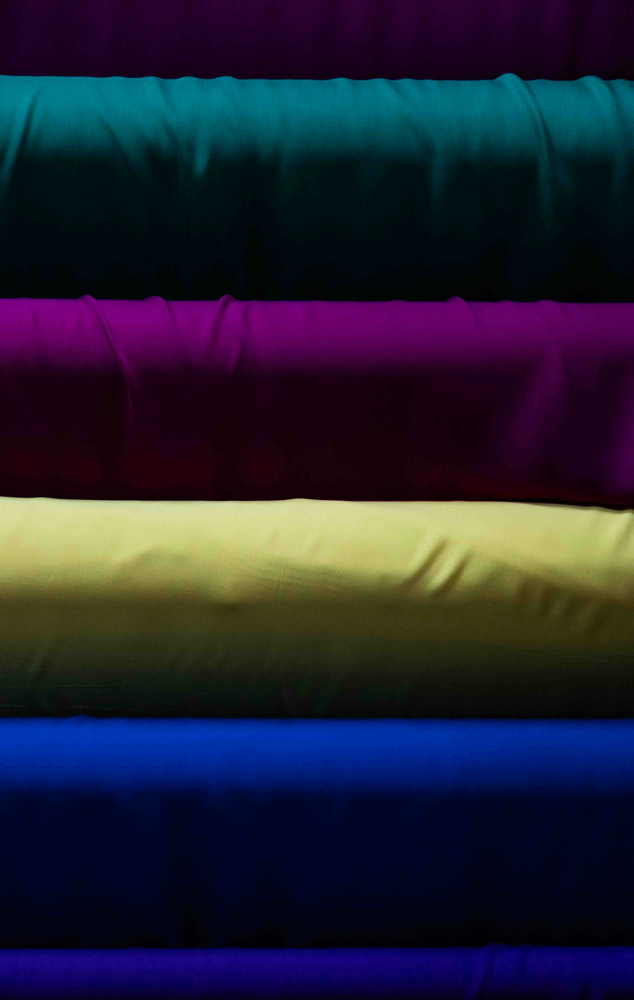

SA AZADIPOUR
Import
International sourcing and import of selected textile and fabric products.
Connecting quality fabrics with international supply.
SA Azadipour explores international sourcing and import opportunities across selected product categories.
Our current focus is textiles and fabrics, with an emphasis on identifying suitable products, suppliers and commercial opportunities.

TEXTILES & FABRICS
Fabrics for selected markets.
Our current import focus is the sourcing of selected textile and fabric products from suitable international suppliers.
Product selection may include different fabric types, qualities, finishes and applications depending on market demand and commercial requirements.
Explore Fabrics →Textile Fabrics
Selected fabrics for apparel, commercial and other textile applications.
Specialty Materials
Exploring specialized textile materials and products according to market requirements.
Future Categories
Additional import categories may be developed based on market demand, sourcing opportunities and feasibility.
INTERNATIONAL SOURCING
From supplier to market.
We explore international sourcing opportunities by evaluating products, suppliers and commercial potential.
Our approach is focused on identifying suitable supply channels and developing professional international trade opportunities.
Market Research
Understanding product demand, market trends and commercial opportunities.
Supplier Sourcing
Exploring suitable international suppliers and product sources.
Product Selection
Evaluating product specifications, quality and commercial suitability.
Import Development
Developing suitable import opportunities subject to applicable commercial and regulatory requirements.
FUTURE OPPORTUNITIES
Building a broader international sourcing network.
While textiles and fabrics are our current import focus, additional product categories may be explored as new opportunities emerge.
GET IN TOUCH
Discuss an import opportunity.
For textile sourcing, fabric import and international supply opportunities, contact SA Azadipour directly.
Contact SA Azadipour →